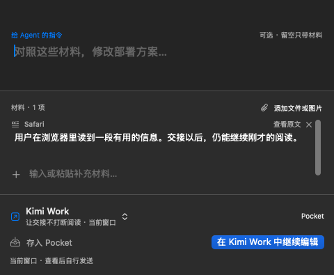

原生 macOS 工具 · 开发预览
把材料交给
正在做的事。
选中一段内容，带上来源和一句交代，
交给外部工具，或先留在手边。
现有应用与设计探索分别展示。新随笔中的本地推荐尚未实现。
现在的 Beamhop
一次小的交接。
按 ⌘⇧Space 捕获选区，在浮层中选择去处、补充提示词。可以复制、填入草稿等待查看，或按 ⌘5 先留着。
工作名称目前记住的是应用，不是精确会话地址。填入不等于已发送或已执行。当前是开发预览，尚无正式发布版本。
源码、安装与当前进展 ↗

交互随笔
在具体动作里推敲产品。
可以动手试的设计探索。会话、建议和回执均为模拟，不连接你的应用。
03 · 最新先响应，再理解。
更轻的浮层、首屏提示词，以及不依赖模型的本地推荐。
事情可以分岔，思路不必散掉。
在文章里选材料。需要时才打开右下角的暂存架。
让信息过去，人留在这里。
第一次认出去处，让下一份材料少找一次路。
先把那一下做对。
产品边界、讨论依据和仍待验证的假设。